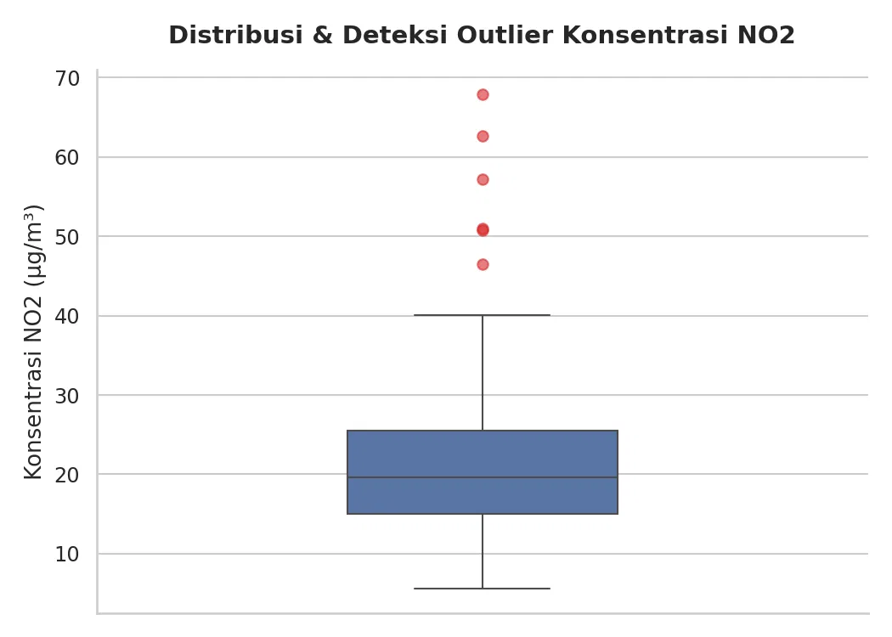
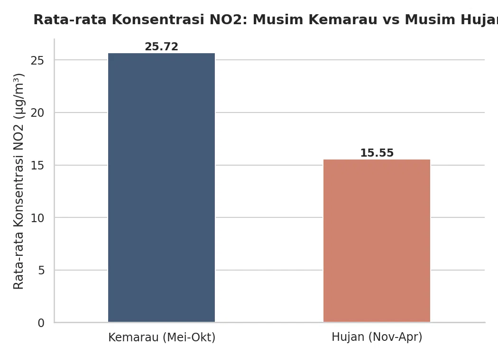
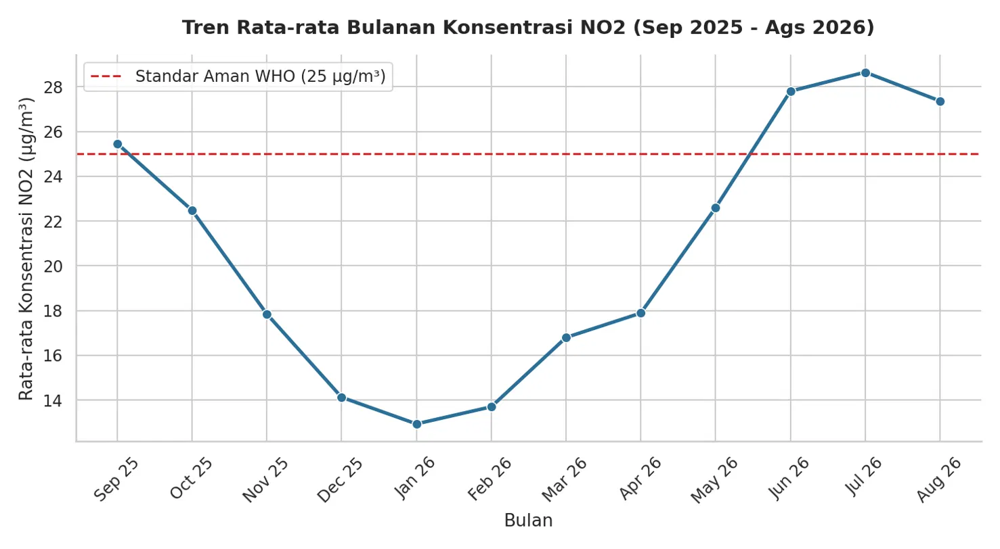
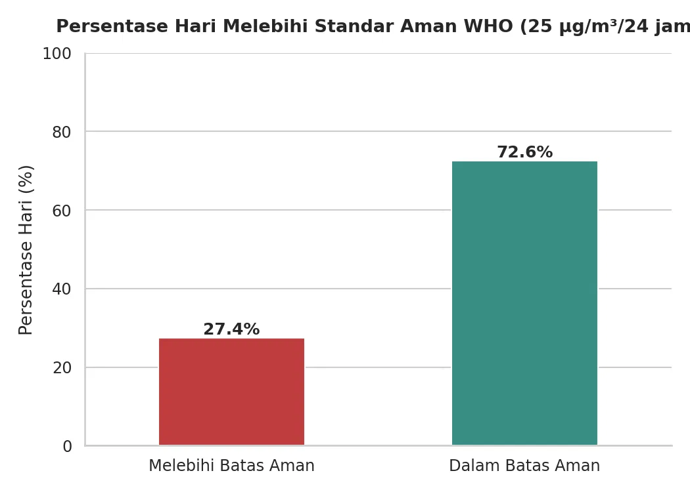

3. Exploratory Data Analysis (EDA)#
Setelah melalui tahap pembersihan data (data cleaning) sebagaimana dijelaskan pada bab sebelumnya, bagian ini menyajikan hasil eksplorasi data (Exploratory Data Analysis) terhadap dataset konsentrasi NO2 di kawasan Jembatan Suramadu selama periode 1 September 2025 – 31 Agustus 2026.
Analisis dilakukan dari empat sudut pandang yang saling melengkapi:
Distribusi dan deteksi outlier
Perbandingan antar musim
Tren bulanan sepanjang tahun
Tingkat kepatuhan terhadap standar aman WHO
3.1 Distribusi dan Deteksi Outlier Konsentrasi NO2#
Temuan Utama: Boxplot menunjukkan bahwa mayoritas konsentrasi NO2 harian berada pada rentang interkuartil (IQR) 15–25 µg/m³, dengan nilai median berada di sekitar 19–20 µg/m³. Rentang wajar data (whisker) memanjang hingga sekitar 40 µg/m³. Namun, teridentifikasi sejumlah outlier — hari-hari dengan konsentrasi ekstrem antara ~46 µg/m³ hingga mendekati 68 µg/m³ — yang berada jauh di atas rentang wajar tersebut.
Interpretasi Ilmiah: Secara umum, pola distribusi ini mengindikasikan bahwa kualitas udara di kawasan Suramadu berada pada level moderat pada kondisi normal harian, yang konsisten dengan aktivitas lalu lintas rutin. Akan tetapi, kemunculan outlier yang jauh melampaui batas wajar tidak dapat dijelaskan oleh aktivitas rutin semata. Sebagaimana telah diuraikan pada bab Data Understanding, lonjakan ekstrem semacam ini umumnya berasosiasi dengan kejadian episodik — seperti kemacetan luar biasa, stagnasi atmosfer akibat kecepatan angin yang sangat rendah (sehingga polutan terperangkap di suatu area), atau asap kiriman dari kebakaran lahan musiman. Temuan ini menegaskan pentingnya sistem pemantauan yang mampu mendeteksi kejadian episodik semacam ini secara real-time, bukan hanya rata-rata jangka panjang.

3.2 Perbandingan Musim Kemarau vs Musim Hujan#
Temuan Utama: Terdapat perbedaan signifikan antara kedua musim. Rata-rata konsentrasi NO2 pada Musim Kemarau (Mei–Oktober) tercatat sebesar 25,72 µg/m³ — nilai yang sudah berada tepat di ambang standar aman WHO — sedangkan pada Musim Hujan (November–April), rata-rata konsentrasi turun signifikan menjadi 15,55 µg/m³, atau sekitar 40% lebih rendah.
Interpretasi Ilmiah: Fenomena ini dapat dijelaskan melalui beberapa mekanisme atmosfer yang saling berkaitan:
Pencucian Atmosfer oleh Hujan (Wet Deposition): Butiran air hujan secara fisik mengikat partikel dan molekul gas polutan seperti NO2 di udara, kemudian membawanya turun ke permukaan tanah atau laut. Proses ini secara alami “membersihkan” atmosfer dari polutan secara berkala selama musim hujan.
Peningkatan Sirkulasi dan Pencampuran Udara: Musim hujan umumnya disertai aktivitas konvektif dan kecepatan angin yang lebih tinggi, sehingga polutan yang terlepas ke atmosfer lebih cepat terdispersi dan terencerkan ke area yang lebih luas.
Stabilitas Atmosfer pada Musim Kemarau: Sebaliknya, musim kemarau cenderung memiliki kondisi atmosfer yang lebih stabil dengan lapisan batas atmosfer (boundary layer) yang lebih rendah. Kondisi ini menyerupai efek “tutup panci”, di mana polutan yang dihasilkan dari aktivitas kendaraan dan industri terperangkap lebih dekat ke permukaan tanpa mekanisme alami untuk menguraikannya.
Kombinasi dari absennya proses pencucian alami dan kondisi atmosfer yang lebih stagnan inilah yang menyebabkan akumulasi polutan NO2 jauh lebih tinggi selama musim kemarau.

3.3 Tren Bulanan dan Pola Musiman Sepanjang Tahun#
Temuan Utama: Grafik deret waktu bulanan memperlihatkan pola yang jelas mengikuti siklus musim. Konsentrasi NO2 terendah tercatat pada bulan Januari 2026 (sekitar 13 µg/m³), kemudian tren terus meningkat secara bertahap hingga mencapai puncaknya pada bulan Juli 2026 (sekitar 28,6 µg/m³). Konsentrasi rata-rata bulanan tercatat secara konsisten melampaui garis standar aman WHO (25 µg/m³) pada empat bulan, yaitu September 2025, Juni 2026, Juli 2026, dan Agustus 2026 — seluruhnya berada pada rentang musim kemarau — sementara bulan-bulan musim hujan (Oktober 2025–Mei 2026) secara konsisten berada di bawah ambang batas tersebut.
Interpretasi Ilmiah: Pola ini sejalan dan memperkuat temuan pada sub-bab sebelumnya. Puncak polusi pada bulan Juli bertepatan dengan puncak musim kemarau di Indonesia, ketika massa udara kering dan minim curah hujan mendominasi wilayah selatan khatulistiwa. Selain minimnya efek pencucian oleh hujan, periode ini juga sering berhimpitan dengan musim kebakaran lahan dan hutan (karhutla) musiman di berbagai wilayah Indonesia, yang berpotensi menyumbang polutan tambahan melalui transportasi asap regional (transboundary haze), meskipun kontribusi pasti dari faktor ini memerlukan kajian lebih lanjut dengan data kebakaran lahan aktual. Menariknya, data juga menunjukkan bahwa bulan September 2025 — sebagai bagian akhir musim kemarau tahun sebelumnya — turut mencatatkan nilai di atas ambang aman, mengindikasikan bahwa pola siklik musiman ini konsisten terjadi dan bukan sekadar kebetulan satu periode.

3.4 Tingkat Kepatuhan terhadap Standar Aman WHO#
Temuan Utama: Secara agregat selama satu tahun periode pengamatan, 72,6% hari tercatat berada dalam batas aman standar WHO (25 µg/m³/24 jam), sedangkan 27,4% hari — atau setara dengan sekitar 100 hari dalam setahun — tercatat melampaui ambang batas tersebut.
Interpretasi Ilmiah: Meskipun secara mayoritas kondisi udara berada dalam kategori aman, proporsi 27,4% hari tidak aman merupakan angka yang tidak dapat diabaikan, terutama karena distribusinya tidak merata sepanjang tahun melainkan terkonsentrasi pada bulan-bulan musim kemarau (Juni–September). Artinya, masyarakat yang beraktivitas secara rutin di kawasan Suramadu menghadapi risiko paparan polusi kumulatif yang jauh lebih tinggi selama periode tersebut dibandingkan rata-rata tahunan. Kondisi ini relevan dengan risiko kesehatan jangka panjang yang telah dibahas pada bab Business Understanding, khususnya bagi kelompok rentan seperti anak-anak, lansia, dan penderita gangguan pernapasan kronis.

3.5 Sintesis Temuan#
Keempat hasil analisis di atas saling menguatkan satu narasi utama: kualitas udara di kawasan Jembatan Suramadu sangat dipengaruhi oleh faktor musiman, dengan musim kemarau — khususnya periode Juni hingga Agustus — sebagai periode kritis yang memerlukan perhatian dan intervensi khusus. Temuan ini menjadi dasar bagi penyusunan kesimpulan dan rekomendasi strategis pada bab berikutnya.